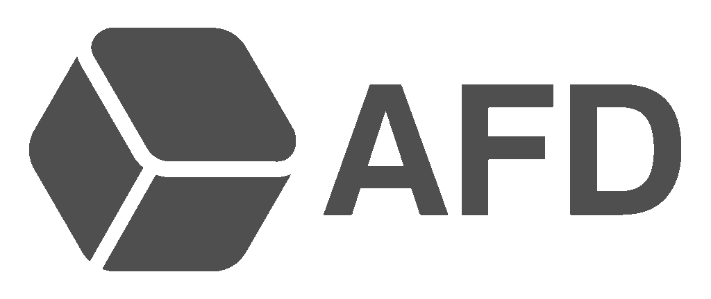

Cível
- Autenticidade de e-mails, mensagens e capturas de tela
- Contratos e assinaturas eletrônicas
- Metadados e histórico de edição de documentos
- Fraudes eletrônicas
- Propriedade intelectual de software
Perito em
Muito prazer, sou o João Vitor, perito em informática forense. Meu perfil está disponível para nomeação no Portal de Auxiliares da Justiça do TJSP, no EPROC e no TRT-2, para perícias cíveis, de família, empresariais e trabalhistas envolvendo e-mails, mensagens, documentos digitais e dispositivos, principalmente.

Perícias que costumam surgir em cada esfera.
A perícia segue, principalmente, as diretrizes da ABNT NBR ISO/IEC 27037:2013, que trata da identificação, coleta, aquisição e preservação de evidência digital, e os artigos 156 a 158 e 464 a 480 do Código de Processo Civil. Cada etapa é documentada, de modo que outro perito consiga repetir o trabalho e chegar ao mesmo resultado.
Reconhecimento e documentação da potencial evidência, antes de qualquer exame.
Remoção do dispositivo para um ambiente controlado, quando aplicável.
Cópia forense e verificação de integridade.
Guarda contra adulteração ou perda.
Permite que um assistente independente ou outra parte autorizada avalie as atividades realizadas.
Os mesmos procedimentos e instrumentos devem permitir alcançar os mesmos resultados.
Os mesmos resultados devem ser obtidos com os mesmos métodos, ainda que com diferentes instrumentos.
As decisões são justificadas como as melhores escolhas para obter toda a potencial evidência digital.
Registro cronológico de quem teve contato com a evidência, quando e por quê. Cada ação é documentada, do recebimento até a guarda. No processo civil não é exigência legal, mas é adotada em toda perícia.
A conclusão depende do material recebido. Quando há apenas cópia, captura de tela ou exportação, o laudo informa o que não é possível afirmar e por quê.
Havendo impedimento ou suspeição, a nomeação não é aceita, e o juízo é comunicado caso a situação surja depois (CPC, arts. 148 e 467).
Antes da perícia, trabalhei por 4 anos como desenvolvedor de software destinado ao contencioso de ações cíveis e trabalhistas. Contei, até aqui, com professores excelentes e agradeço-lhes imensamente pelo aprendizado que, hoje, posso compartilhar aqui.
Bacharelado em Sistemas de Informação
MBA em Cibersegurança

Mais de 80 horas de treinamento forense na Academia Forense Digital (AFD), em andamento
Cópia forense física e lógica, bloqueio de escrita, verificação por hash e aquisição de memória. Uso do FTK Imager.
Autopsy, IPED e KAPE.
Windows, Linux e noções de macOS. Sistemas de arquivos FAT32 e NTFS, recuperação de dados, análise de linha de tempo e de máquinas virtuais.
Análise com Volatility.
Aquisição e análise de aparelhos Android e iOS. Uso do Cellebrite.
Análise de e-mails, evidências em nuvem e em sites, metadados e pesquisa em fontes abertas (OSINT).
Captura e interceptação de tráfego, análise de registros de equipamentos de rede e identificação de indicadores de comprometimento. Uso do Wireshark.
Identificação por análise estática e dinâmica em ambiente isolado.
Os laudos abaixo são fictícios, elaborados a partir de informações simuladas, e não se referem a nenhum processo real. Servem para mostrar como estruturo a análise e respondo aos quesitos. O laudo empresarial foi baseado em um laboratório da plataforma CyberDefenders.
Todos seguem a mesma estrutura: identificação, objeto da perícia, material examinado, metodologia, análise técnica, resposta aos quesitos, limitações e anexos.
Para receber meu currículo completo, envie uma mensagem pelo formulário abaixo. Fico à disposição para dúvidas técnicas, solicitações de materiais ou comentários sobre metodologias.